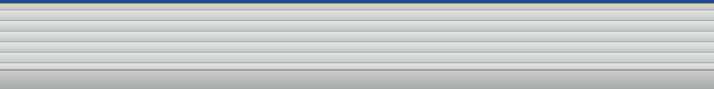
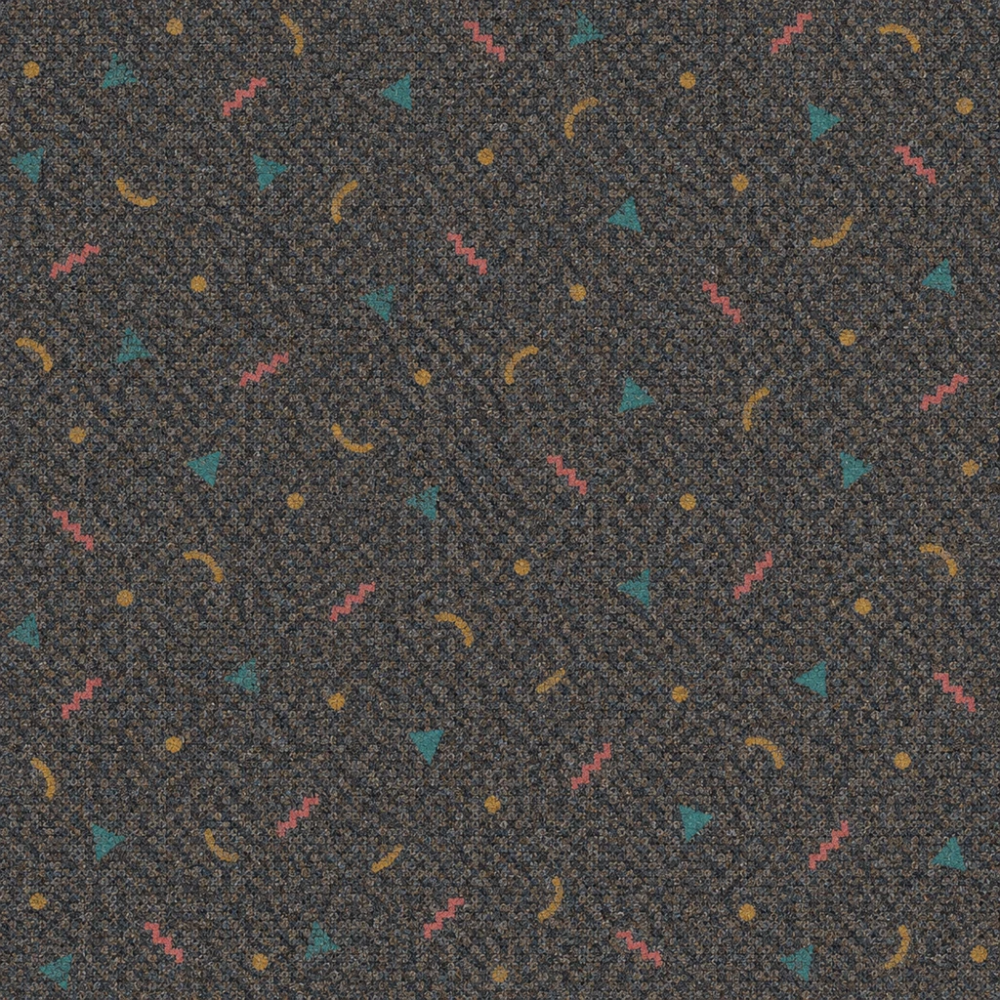
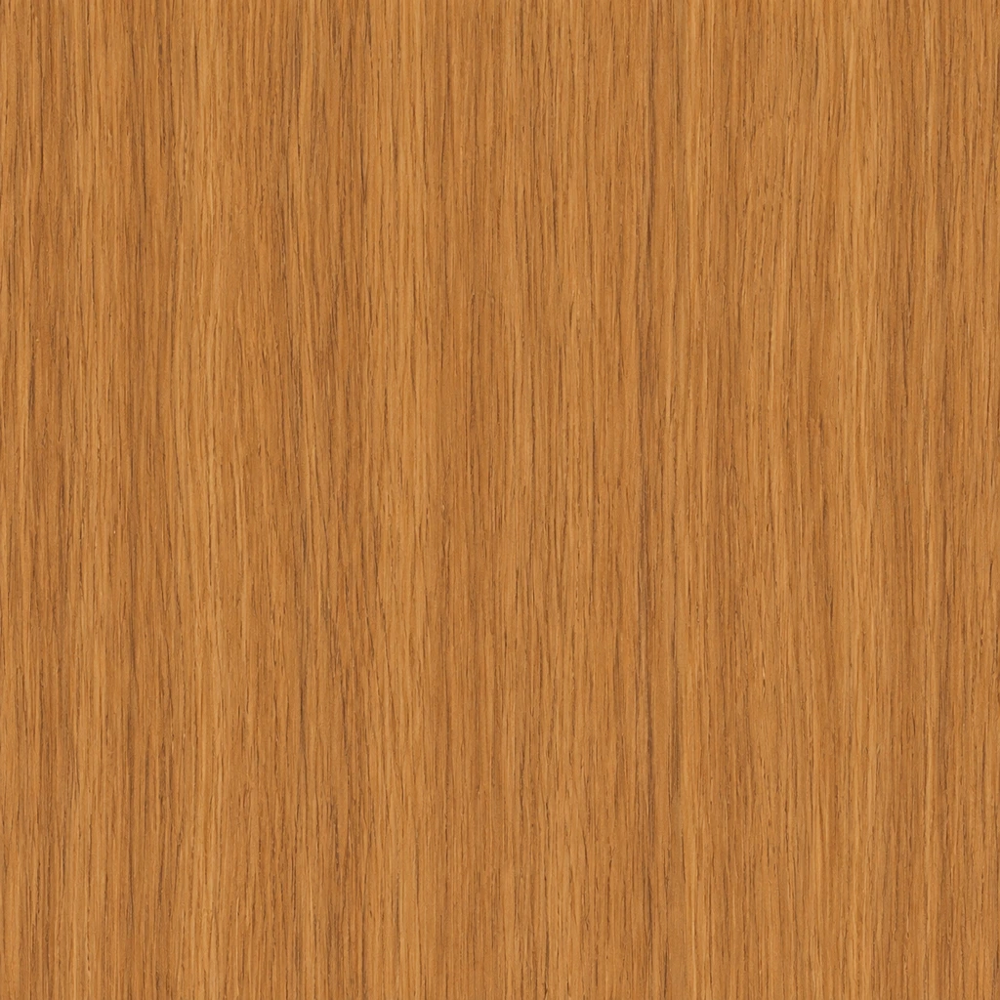

Oak furniture, restrained blue-and-yellow signage, grey slatwall and muted confetti carpet.



Flat material study, not a screenshot of the app.
Generated texture edges are not certified seamless. Start with one tile per visible surface. See README.md for scene integration.